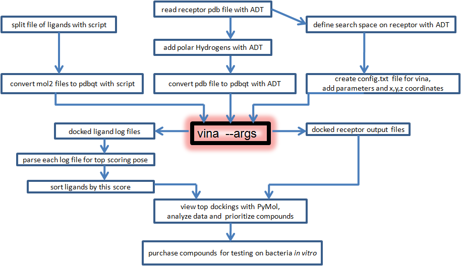

|
Virtual screening docks many ligands with a protein target (receptor) and
reports a number of top scoring poses.
I acquired pdb and ZINC ligand files and prepared them for input to AutoDock Vina. After Vina finished docking the ligands were sorted by score. These scores were used to prioritize lab experiments. |
|  |